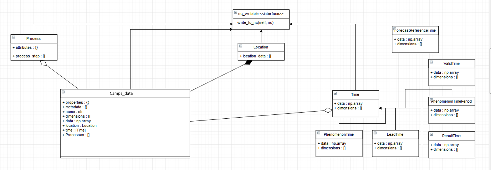
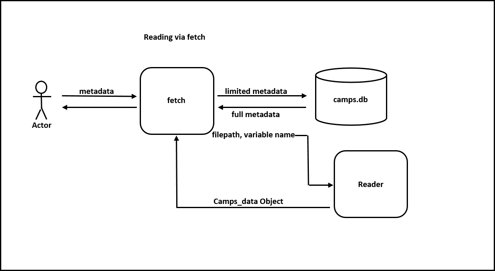
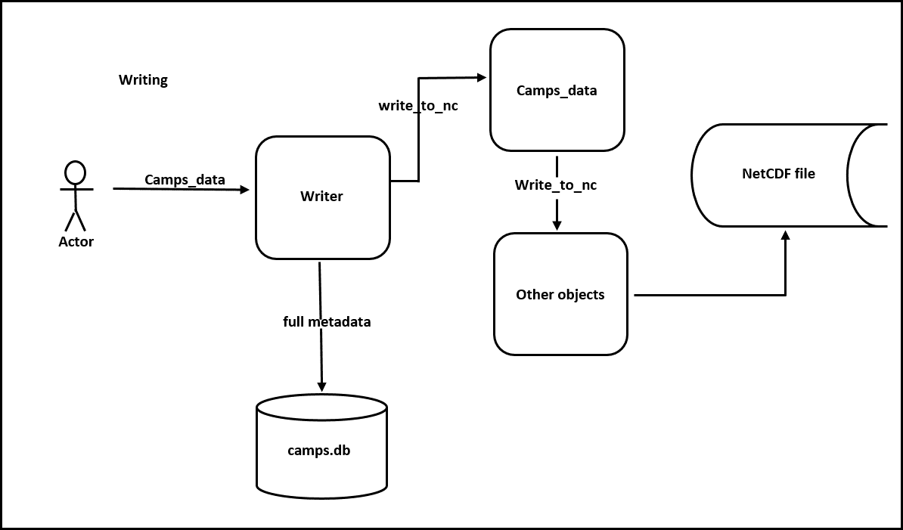
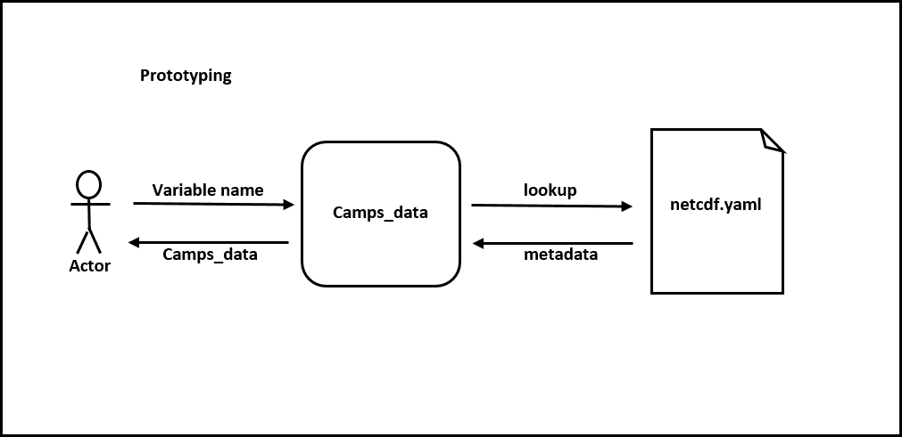

CAMPS Techinical description¶
Overview¶
The purpose of this section is to provide some detail on the technical and unseen side of CAMPS. It will also cover the reasoning for certain design decisions.
Goals and Scope¶
For context, it’s important to understand what problems the CAMPS project does and does not try to address.
It does:
Provide a way of encoding CAMPS formatted metadata.
Aid in the processing of predictors from model output.
Have modules for converting observations and model output to netCDF.
Allow for alternative statistical postprocessing techniques to be added.
It does NOT:
Have ways of remotely pulling data (You’ll need to have the data available locally).
Promise to be able to handle all file types.
Support very diverse situations. It was intended to be used with NWP output, for multiple linear regression post processing. However, with a bit of hacking, other types of StatPP applications could be implemented.
Python version and Libraries¶
Anaconda2-5.3.1 (or newer) is recommended for running CAMPS. The following libraries are required even when using Anaconda.
Language |
Version |
|---|---|
python |
2.7.13 |
Library (with Anaconda) |
Recommended Version |
|---|---|
netCDF4 |
1.5.1 |
pyproj |
1.9.5.1 |
pygrib |
2.0.3 |
metpy |
0.9.2 |
basemap |
1.2.0 |
basemap-data-hires |
1.2.0 |
Note
If not using Anaconda, the libraries in the following table must be added
Library (without Anaconda) |
|---|
matplotlib |
scipy |
numpy |
PyYAML |
matplotlib |
pandas |
seaborn |
Directory Structure¶
camps/camps/core¶
Contains code that defines the Camps_data object. Also stored here are composite classes such as Time and Loaction, along with I/O modules. Additionally, the directory with data conversion modules resides within core.
camps/camps/core/data_conversion/grib2_to_nc¶
Grib2 to netCDF conversion code here.
camps/camps/core/data_conversion/marine_to_nc¶
Marine buoy observations to netCDF code here.
camps/camps/core/data_conversion/metar_to_nc¶
Metar observations to netCDF code here. Also includes QC.
camps/camps/registry¶
Contains all the example configuration and control files for the various drivers. Also, contains a key file, netcdf.yaml, that is used widely in metadata templating.
camps/camps/registry/db¶
Contains the sqlite database and associated code to access it. The database stores all variables and their metadata that have been written from the used package
camps/camps/scripts¶
This contains all the driver scripts. All scripts require a control file to be used as an argument when running the script.
camps/camps/StatPP/regression¶
Code that contains the modules used for the multiple linear regression.
camps/camps/gui¶
Various GUIs and modules used to display data are here.
camps/camps/mospred¶
Contains modules that support the capabilities of the u201 equivalent code, which does a does a number of things. It creates new predictors and predictands – typically from model output. It applies procedures to the variables, such as smoothing and interpolating. It organizes the variables into appropriate dimensions.
camps/camps/libraries/mathlib¶
Contains modules used when creating new predictors/predictands. Modules contained here are largely used during the mospred (u201 equivalent) step in a CAMPS development.
Running CAMPS Software¶
Every driver script in CAMPS will have an accompanying configration file that controls certain aspects of the run. It is imperative that you read the appropriate example config file to determine how to format your control file for the given driver script you are running. Without a control file passed as an argument, CAMPS software will error out.
METAR processing:¶
- Driver
camps/camps/scripts/metar_driver.py
- Config example
camps/camps/registry/metar_control.yaml
Marine bouy processing:¶
- Driver
camps/camps/scripts/marine_driver.py
- Config example
camps/camps/registry/marine_control.yaml
grib2 processing:¶
- Driver
camps/camps/scripts/grib2_to_nc_driver.py
- Config example
camps/camps/registry/grib2_to_nc_control.yaml
mospred processing:¶
- Driver
camps/camps/scripts/mospred_driver.py
- Config example
camps/camps/registry/mospred_control.yaml
equation processing:¶
- Driver
camps/camps/scripts/equations_driver.py
- Config example
camps/camps/registry/equations_control.yaml
forecast processing:¶
- Driver
camps/camps/scripts/forecast_driver.py
- Config example
camps/camps/registry/forecast_control.yaml
Architecture and Design¶
CAMPS’ core data structure is the Camps_data class. It is a composition of different components that often represent variables that can be written to a netcdf file independently of the parent object. Classes like Time, Location, and Process all share a common interface, nc_writable which enforces the definition of the method write_to_nc.
Fetching utilizes the database, which keeps track of variables and their metadata. If fetch is passed metadata, it will return one of the entries that contains that metadata. If a phenomenon time or lead time is also given, it will slice the variable based on those parameters.
Writing a variable simply invokes the Camps_data object’s write_to_nc function, which in turn calls composite object’s write_to_nc. Upon succesful write, the variable and its metadata are stored in the database.
Prototyping is CAMPS’ way reducing time spent adding metadata to an object. Metadata is defined in netcdf.yaml and is added to a Camps_data object when initialized with the appropriate key.
Camps Data Object¶
Introduction¶
The Camps Data class should be a representation of ANY kind of ‘CAMPS’ formatted data. That is, the data can be gridded or vector, it may or may not have a lead time associated with it, and can be n-dimensional.
Dimensions¶
Allowing for the flexiblility of the object, the number of dimensions of the data are unlimited. However, these dimensions should be able to be identified.
For example, Assume there is a variable that is gridded and is a snapshot of a single time. This variable would have three dimensions: x, y, and time. Another variable is a vector of stations and includes lead times at multiple forecast reference times. This would also have three dimensions: number of stations, lead time, and time.
Standard dimension names are located in netcdf.yaml in the ‘Dimensions’ section.
These separate variables should be distinguished based on other metadata.
Creating Camps_data Objects¶
Regardless of the type of data, there are similar procedures for creating a camps data object.
First, You’ll need to initialize the object. If the argument passed into the constructor is a key defined in netcdf.yaml, such as,
>>> wspd = Camps_data('wind_speed_instant')
then it will be initialized to the metadata corresponding to that key.
Next, you’d want to give your object a time period. There are different flavors of Time in CAMPS, so which ones you need depend on the application. However, there’s a very good chance you’d need a phenomenon time defined. You might create it like this,
>>> ptime = Time.PhenomenonTime(start_time='19910518', end_time='20180810')
And add it to your object like this,
>>> wspd.time.append(ptime)
CAMPS will try to handle the formatting, writing, and reading of these variables.
Sometimes, you’ll want to apply a procedure to the variable. If that’s the case, it would be a good idea to add a Process object to your object.
A Process is created similar to a Wisps_data object, you can initialize it using a key in procedures.yaml.
>>> p = Process('BiLinInterp')
Lastly, since we’re wring to netcdf, you need to provide dimensions to your object. You can name them whatever you’d like, but there are a few dimensions that have special properties, that act slightly differently. These are found in netcdf.yml in the dimensions section.
>>> wspd.add_dimensions('lat','lon')
Fetching and Database¶
The fetch module is the CAMPS way of pulling data by metadata. Traditionally, this would be done by searching all files in a given directory until the correct variable was found. For CAMPS, to improve performance, we opted to use a sqlite3 database to keep track of where our variables are located and what metadata is associated with them. When a user initially imports CAMPS from a python interpreter a hidden directory named “.camps” is created in their “home” directory. This is where the database will be stored automatically when running a CAMPS application. Each user should have their own database, although if two users are on the same machine with similar file permissions, a database could be easily shared.
In most cases, interacting with the database directly is unneeded, as the normal interaction with CAMPS will handle updating the database. In cases where direct intervention is necessary, the db.py module has some helper methods to assist in this interaction. Of course, those comfortable with SQL can modify it directly with some very limited knowledge of python’s sqlite3 package or by running sqlite3 directly.
Time¶
Time in CAMPSS is divided into 5 concepts, and the software makes use of 5 distinct classes to handle their differences. They include, ForecastReferenceTime, LeadTime, PhenomenonTime, PhenomenonTimePeriod, ResultTime, and ValidTime.
Registry and configuration¶
Examples¶
Below are a few very basic examples of data manipulation in CAMPS. Since CAMPS was built with specific metadata requirements, the use of the built in data objects and I/O utilities is necessary.
Create¶
>>> from camps.core.Camps_data import Camps_data
>>> import numpy
>>> wspd = Camps_data('wind_speed_instant') # Initializes object
>>> wspd.data = numpy.random.rand(10,10)*50 # Assign data
>>> wspd.add_dimensions('x','y') # Need to specify dimension names
>>> wspd.metadata['my_important_attribute'] = 42
>>> wspd
***** wind_speed ******
*
* dtype : float64
* processes : ( )
* dimensions : ['y', 'x']
Metadata:
* comment : Wind speed is set to -9 if winds are variable.
* OM__observedProperty: StatPP__Data/Met/Moment/WindSpd
* name : wind_speed
* valid_min : 0.0
* coordinates : elev
* long_name : horizontal wind speed
* standard_name : wind_speed
* my_important_attribute: 42
* valid_max : 75.0
Shape:
(10, 10)
Data:
[[ 44.32559503 29.6
29957 48.87075532]]
Write¶
>>> from camps.core import writer
>>> writer.write(wspd, 'output.nc')
$ ncdump output.nc
netcdf output {
dimensions:
y = 3 ;
x = 3 ;
elev = 1 ;
level = 1 ;
variables:
int64 elev0(elev) ;
elev0:long_name = "height above surface" ;
elev0:units = "m" ;
elev0:standard_name = "height" ;
elev0:positive = "up" ;
elev0:axis = "Z" ;
double WindSpd_instant__(x, y, level) ;
WindSpd_instant__:_FillValue = 9999. ;
WindSpd_instant__:comment = "Wind speed is set to -9 if winds are variable." ;
WindSpd_instant__:OM__observedProperty = "StatPP__Data/Met/Moment/WindSpd" ;
WindSpd_instant__:ancillary_variables = "" ;
WindSpd_instant__:valid_min = 0. ;
WindSpd_instant__:coordinates = "elev0 x y" ;
WindSpd_instant__:long_name = "horizontal wind speed" ;
WindSpd_instant__:standard_name = "wind_speed" ;
WindSpd_instant__:my_important_attribute = 42LL ;
WindSpd_instant__:valid_max = 75. ;
WindSpd_instant__:SOSA__usedProcedure = "( )" ;
// global attributes:
:primary_variables = "WindSpd_instant__" ;
:version = "CAMPS-1.0" ;
:references = "" ;
:file_id = "b0592d4f-88b1-4160-adb9-9cb031c025dd" ;
:url = "http://www.nws.noaa.gov/mdl/, https://sats.nws.noaa.gov/~wisps/" ;
:organization = "NOAA/MDL/SMB" ;
:institution = "NOAA/National Weather Service" ;
:Conventions = "CF-1.7 CAMPS-1.0" ;
data:
elev0 = 2 ;
WindSpd_instant__ =
6.59734754874646,
41.240254448533,
40.076160141887,
40.8188432115729,
45.445944531748,
33.2932430382621,
16.531263567237,
13.2378413416106,
41.7054178526444 ;
group: prefix_list {
// group attributes:
:StatPP__ = "http://codes.nws.noaa.gov/StatPP/" ;
:OM2__ = "http://codes.nws.noaa.gov/StatPP/" ;
:SOSA__ = "http://www.w3.org/ns/sosa/" ;
:OM__ = "http://www.w3.org/ns/sosa/" ;
:PROV__ = "http://www.w3.org/ns/prov/#" ;
:StatppUncertainty__ = "http://codes.nws.noaa.gov/StatPP/Uncertainty" ;
} // group prefix_list
}
CAMPS start to finish¶
Once CAMPS is properly installed into your Anaconda2 distribution, make sure you do the following first step:
$ python
$ import camps
$ quit()
This first import to the camps module will create a hidden directory in your home directory which contains both the CAMPS database and a control directory which contains all your control file templates.
CAMPS makes use of the python feature “console scripts” which allows a user to run driver scripts directly from the command line
metar_driver.py –> CAMPS_metar_to_nc marine_driver.py –> CAMPS_marine_to_nc grib2_to_nc_driver.py –> CAMPS_grib2_to_nc mospred_driver.py –> CAMPS_mospred equations_driver.py –> CAMPS_equations forecast_driver.py –> CAMPS_forecast
Obs¶
To start, you’ll need to process some observations.
Go to camps/camps/registry/metar_conrol.yaml to view an example control file.
Then create your own control file, following the example syntax very carefully.
$ CAMPS_metar_to_nc /path/to/controlfile/metar_control.yaml
Let’s get some marine observations too.
Again, you’ll want to view the example and create your own control file, camps/camps/registry/marine_conrol.yaml,
and then execute the driver.
$ CAMPS_marine_to_nc /path/to/controlfile/marine_control.yaml
Model¶
Great! We have our observation data. Let’s try to process some model data. For now, grib2_to_nc only accepts grib2 data on a Polar Stereographic grid. More functionality will be added as CAMPS continues to grow.
First, create your control file, as done previously camps/camps/registry/grib2_to_nc_control.yaml.
This might start to get repetative. Then,
$ CAMPS_grib2_to_nc /path/to/controlfile/grib2_to_nc_control.yaml
So far so good?
Generating Predictors¶
Now, model data doesn’t have everything we want for a regression. Sometimes, we’ll want to create our own predictors that are derived from the model variables. We can also apply different procedures to the data we produce that changes its characteristics. Also, if we’re doing a station based MOS run, we’ll need to interpolate to stations.
Mospred_driver can be run for both creating predictors and/or predictands. Be sure to specify which (or both) you want to run for.
In addition to the standard control file, mospred_driver also requires a couple other input files, the locations of which should be added as arguments inside mospred_control.yaml.
The config file to follow: camps/camps/registry/mospred_conrol.yaml
And the driver,
$ CAMPS_mospred /path/to/controlfile/mospred_control.yaml
Regression¶
Now we’re ready for the regression. The config file
camps/camps/registry/equation_conrol.yaml will give an example of tuning, and
is where you can specify which predictors and predictands you want run the regression over.
$ CAMPS_equation path/to/controlfile/equations_control.yaml
Forecast¶
Finally, we will want to generate some forecast output and apply basic consistency checks.
The config file to follow: camps/camps/registry/forecast_control.yaml
And the driver,
$ CAMPS_forecast /path/to/controlfile/forecast_control.yaml
Output¶
That’s it! That is all you need for a MOS-2000 like MOS development using CAMPS software! All output files are saved in NetCDF format and can be found in the output paths you specified inside each driver control file.